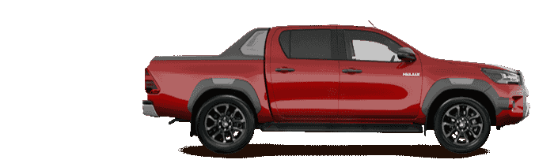
-
-
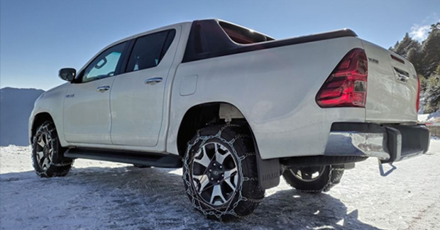
陳冠竹先生 烤肉店業者
市面上的皮卡選擇不多，排除沒有後勤的水貨之後，除了TOYOTA HILUX，就剩下另外兩牌的皮卡，第一個刪除掉的是沒有TSS這類配備的某牌皮卡，我不能接受現在買車還沒有這類先進安全配備，尤其是主動剎車與車道偏離修正這種相當重要的安全配備……更何況它還賣比較貴！
接著看另外一牌，畢竟想到皮卡我們第一個想到的一定是它，但是低階的就要貴十萬還沒有 -
主動跟車、煞車輔助等主動安全配備，高階貴十幾萬雖然有主動安全配備，但是整體配備上還是HILUX更好，要花比較多的錢買比較少的配備還真需要一點決心……，壓垮駱駝的最後一根稻草應該是變速箱，每隔幾天社團就會傳出掛變速箱的慘案，而且常是在路上直接失去動力，這對於常載著家人跑高速公路的我，實在是難以承受的風險！
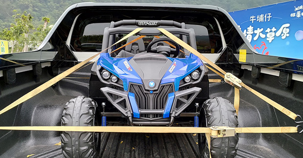 -
考慮到最後，便決定挑選便宜耐用又好看的HILUX，尤其和泰引進的版本已經是頂級中的頂級，超霸氣的外觀超外凸的輪弧貨斗還有很帥的擾流板，看起來非常有質感。再談內裝，HILUX的豪華內裝鍍鉻、電動椅、鋼琴烤漆、皮革縫線、高音喇叭、大螢幕車機、後座出風口……應有盡有。
最大優勢就是貨斗了，我老婆的腳踏車是淑女車加兒童安全座椅，有HILUX就可以輕鬆載著一家人跟腳踏車出門踏青，尾門更是用一隻手指頭就能輕鬆闔上，從此小孩靠近車子就不必提心吊膽啦！
-
-
-
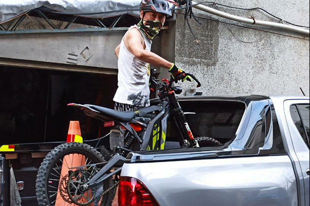
邱文信先生 保養品貿易商
TOYOTA HILUX這個響亮的名字 ，早在多年前就已深植心中，總想著這個打不死的名字，這部開不壞的車，不知何時才能納入車庫？夢裡驚醒……是他！真的是他！已然四平八穩的佔據了我的車庫，心中的呼喚，想必 是HILUX已經聽到了(事實上是老婆聽到了啦)。今天起，我可以在都市當個斯文人；更可搖身一變
-
，帶著家人悠遊於山林雲瀑中。
言歸正傳，為何選擇HILUX？因為他有勝過它牌的強健體魄、貼心的內裝、大小適中的車身尺寸 、勇於挑戰的性格、更趨於歐系車的底盤扎實駕馭感，以及TOYOTA最優秀的車輛妥善率！嘿嘿～想要當我的肩膀，可不能呼呼口號而已……，TOYOTA原廠的完善保養維護體系，業務專員的細心接待，正是我們車主最大的靠山！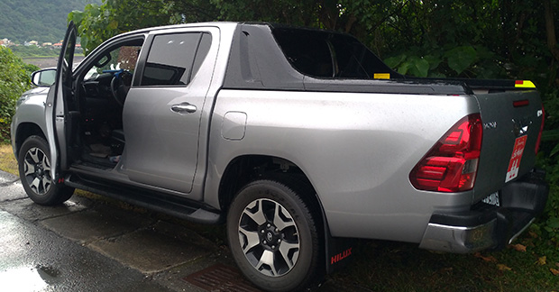
-
-
-
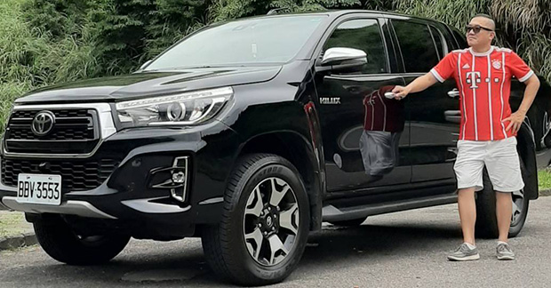
范揚耀先生 已退休
記得學生時代看過一部電影名叫「回到未來」，整部電影看完印象最深刻的是，男主角老爸送給他的黑色皮卡：黑、高、挺拔、大輪胎、一排探照燈。什麽車我不知道但我好想要，他比女主角更吸引我！之後熟悉身影又出現，查德皮卡打敗利比亞坦克你沒看錯！出社會後接觸不少車，前後驅、轎式跑式……最得我心是4WD，喜歡他克服萬難的能力，不論是on road或off road。出國去到東南亞、
-
紐澳、南非，甚至連冰島都能看見他！讓我從年輕哈到現在！（現在還是年輕）
千呼萬唤，終於在去年總代理引進時，我立刻下訂，那軍規的結構（法俄軍採用）、那世界車駕駛的視角、那聰明的六速变速箱仿佛有心電感應（上坡保持扭力不亂升檔，下坡時自動降檔引擎刹車）、那豐富的配備（環景、車道偏移、跟車等等）、那達達……又省油的1GD柴引（平均油耗11~12km/l，二千轉爬林口坡，上武嶺從沒那麽輕鬆過）。
至於他牌同級車有沒有想過？我相信沒人會拿千搥百鍊的考驗交換浮華數據，因為那總是經不起考驗的！這台off road能力看倌們自行上網搜尋就知曉。交車至今八個月，嘴角、眼角還呈上揚月彎狀！最後忘了跟大家說他的名字叫「TOYOTA HILUX」！
-
-
-
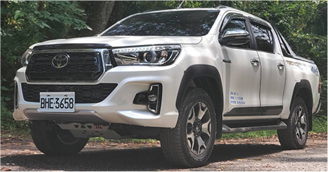
許茗翔先生
有一台皮卡是我的夢想，以前經常在國外頻道上看到美式皮卡，就期待可以有擁有的一天。在2020年3月 我的夢想終於達成了，在2019發表HILUX後就馬上預定。TOYOTA一直是我信賴的品牌我家有2011年式ALTIS 1.8、2015 RAV4 2.5、2020 HILUX，就是因為銷售服務點和維修服務廠最多！大部分零件取得方便。HILUX可以兼顧旅遊、工作、載貨的需求，由於我每年會參加中南部展覽，
-
貨斗可以將我的展覽用的型錄、產品塞好塞滿一台搞定。在這越來越炎熱的天氣，後座出風口可以讓後座的家人乘坐更舒服（有的品牌沒有），而且這時代的天氣變換劇烈，可能有短時間強降雨，HILUX 涉水70公分能力可以輕鬆應付。另外它的安全氣囊配備7個，超越他牌同款車，對駕駛與其家人朋友更安全，還有PVM環景功能，讓初次駕駛皮卡的人在停車或小巷時，更能注意車周邊環境，簡而言之，有了HILUX就可以往山上河谷海邊盡情駕馭！
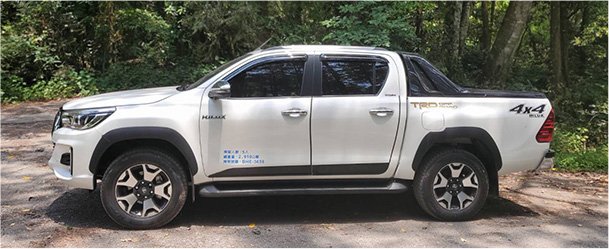
-
-
-
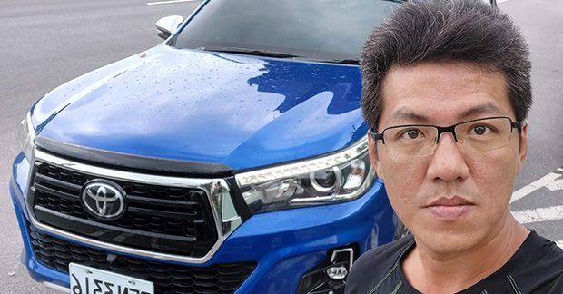
許鈞舜先生 3C代理商
在我當初購車要做出選擇時，就以功能多樣化且具有高度可變性的車款來選擇，原本是看它牌的皮卡，連試駕都去了，主要令人擔心的是那問題不少的十速變速箱……，在與朋友討論後最終選擇了妥善率較高的HILUX！它的後座較舒適，車價也較平易近人，重點是它結合了我的工作與生活，現在我領車超過四個月，里程己近萬，整體的感受度是非常好的！配合另外安裝的車斗架以及車頂架，
-
讓我在工作上更顯得心應手，上山下海克服地形，把車直接開到野溪溫泉旁的體驗，帶我遠離人群心曠神怡。車雖然大了點，但也沒有多增不便，相對車子大給我帶來的好處要多太多了！
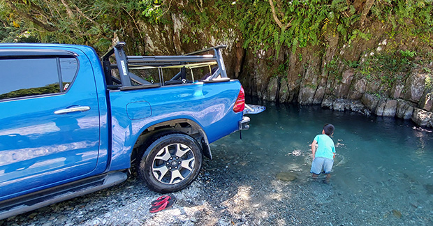
-
-
-
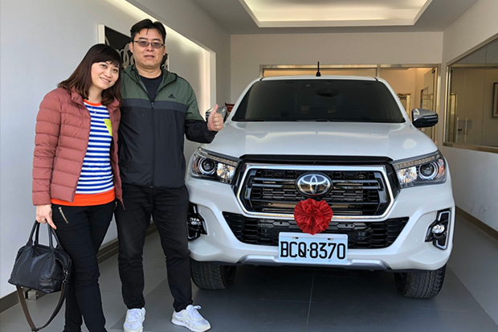
陳贊宇先生 公務員
以前就夢想有一部車，能帶著家人去深山溪谷尋找秘境野營地，感受臺灣山林的美、體驗越野的熱血、享受天然溫泉的溫度、抵達一般人無法到達的秘境，所以我研究了TOYOTA HILUX以及三個它牌同級車，最後我選擇了擁有慓悍越野血統、妥善率嚇死人及有強大後勤支援的HILUX。HILUX貨卡不是萬能車、
-
但是它卻是最能滿足我需求的一部車，也許有人認為它也有缺點（乘坐感不如一般轎車舒適、車大停車位難找等），但這不就是HILUX貨卡能上山下海的基本條件的嗎，車子就是要滿足適合自己想要的生活，HILUX它確實值得擁有，它能帶著我跟家人挑戰各地石頭路跟林道，它的越野能力真的讓人驚豔、我跟家人終於可以實現到各地秘境探險、露營的夢想，這就是我要的生活
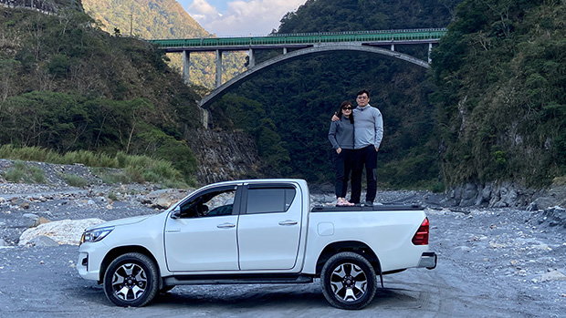
-
-
-
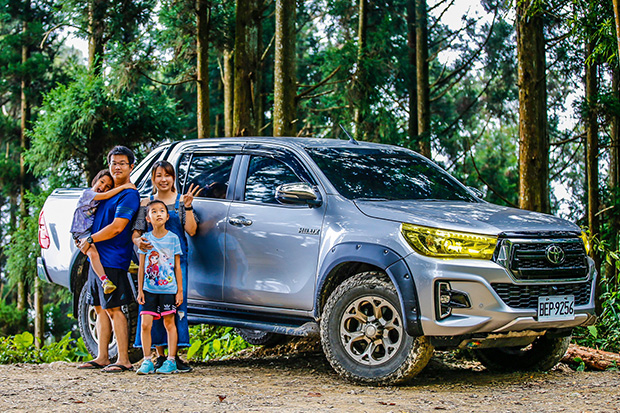
彭義傑先生 車業代理維修保養業者
HILUX去年七月發表後，就在猶豫要不要換貨卡來當下一台車，同時也一直觀望其他它牌同級車款。畢竟買車容易養車難！這是多年來玩車的感觸……，在網路平台與FB社團裡有很多車主的經驗分享，還有YouTube 國內外車評的介紹，前後猶豫有半年之久，從外觀、性能、安全到實用性等，最重要的考量是耐用
-
度，多款貨卡比較下來，最終還是與愛妻共同決定選擇HILUX！（車子配備上就不多說了，因為魔鬼藏在細節裡）
決定讓HILUX來當我們家下一個夥伴，每逢假日就帶著全家一同出遊或是前往秘境露營，HILUX就是這樣一輛適合工作與戶外休閒的全能幫手，最開心的還是寶貝女兒們，每逢假日總是滿心期待詢問這週末我們要去哪裡冒險！真的讓我們親子之間又多了些互動話題，這完全是以前開休旅車無法辦到的事情！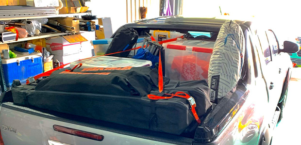 -
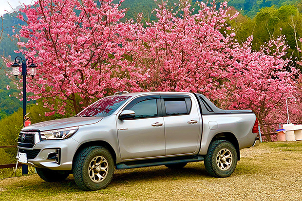
購車至今有半年了，覺得HILUX真是值得我信賴的好車！與好朋友聚會聊天時，只要提到車，都迫不期待與好友們推薦分享一下，換HILUX後的心得感想，並且跟他們說2020改版的HILUX更是值得購買！
-
-
-
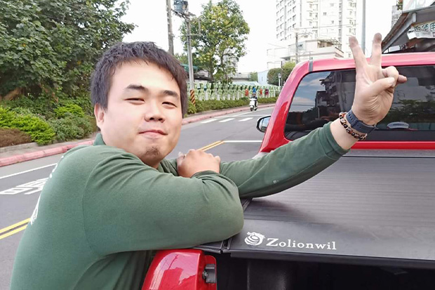
曾稚詠先生 汽車保養廠經理
2018年底，首次聽說HILUX這車款，不久，一日家中小妹開小車被逼車而擦撞，當下我立刻警覺應當購買「足夠強壯的車」，也因此開始注意到HILUX。
HILUX整體性能給人一種壯美的美感，外型勇猛、帥氣，又經全世界車主認證的皮卡，加上有自動跟車和車道偏移警示系統，能讓跑遠 -
途（從台北到雲林）探望奶奶的我方便許多。奶奶在世時曾因父親買Yaris時說了句：「為什麼買銀色不買紅色？」自此之後我便決定要買紅色的HILUX。果不其然，紅色的艷麗搭配HILUX的外型果然很令人驚豔。HILUX剽悍的外表、沉穩的車體、銳利的頭燈，總能讓人在街上被路人搭訕。除了外型，車內望向車外的視野廣闊，扭力夠，配上全車環景真的讓人讚嘆。
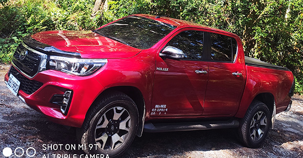 -
HILUX拯救我多次免於意外傷害，還記得初次從蘆洲服務廠開回淡水在成蘆橋上開心的忘我，差點就撞上前方的車，還好當時有主動煞車輔助救我；還有次印象最為深刻，當時從台中前往台北，因前方車輛急煞，我車上電腦介入加大煞車力道，後方車直接撞上。當下我心想：完蛋了！車子肯定毀損嚴重。下車前看，沒想到對方前保桿、葉子板都毀了，我的車大致完好無事，唯獨留下被撞後的光榮的小擦傷。歷經此事後，我對這台車的耐撞度和安全度充滿信心。
-
-
-
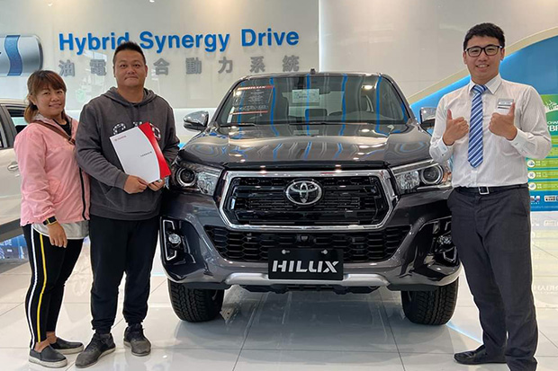
蔡志欽先生 清潔隊駕駛
當初原本單純以家庭用車為考量，期間也去接觸它牌多款皮卡，在多次考量後，選擇購買預算明顯符合條件的TOYOTA HILUX。因為無論在空間、配備、性能考量下，售價較低的TOYOTA HILUX皆不遜色於它牌同級車！然而在購車後，發現這台HILUX完全能夠輕鬆應付野營露營上山下海的需求，所以在這邊推薦
-
其他也想入手皮卡的朋友，絕對要購買這台空間、價格、安全配備，以及外型都優異的HILUX！
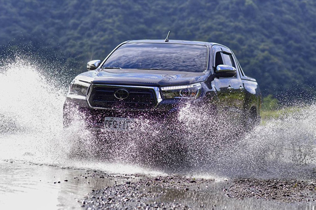*由和泰汽車舉辦之HILUX車主證言活動提供稿費邀約心得，
但心得為個人真實感想。
-
右滑看更多
請調整螢幕方向
以橫式操作進行遊戲
請以Chrome或Safari遊玩獲得最佳體驗
點擊瀏覽器右上角按鈕
選擇以Chrome或Safari開啟網站
即可順利進行遊戲挑戰

Loading...

-
活動期間
2020/07/29 12:00起，至2020/08/31 23:59截止
-
參加辦法
- 於本活動網站內完成6關卡挑戰
- 公開分享挑戰結果於個人臉書貼文
- 完成填寫收件人資訊並同意活動辦法相關規定後送出
＊參加者需完成以上3步驟，始具備抽獎資格
-
活動獎項
【Nintendo Switch】主機1組，共1名。
中獎者可獲得1組【Nintendo Switch】主機。
-
得獎通知及領獎辦法
活動主辦小組將以電腦隨機方式抽獎，並於2020/9/30前公告於【TOYOTA Taiwan】Facebook粉絲專頁。
得獎者須於2020/10/31前主動聯繫【TOYOTA Taiwan】Facebook粉絲專頁小編，並提供收件人資訊，主辦單位將以收件人資訊寄出活動獎項，中獎者逾期未回覆則視同放棄中獎資格。 -
【注意事項】
- 本活動由和泰汽車股份有限公司（下稱主辦單位）主辦，參加者參加本活動同時，即同意受本活動「注意事項」、「個人資料告知事項」之規範，如有任何違反之情事，主辦單位得取消其中獎資格，並對於任何破壞本活動之行為保留法律追訴權。
- 本活動僅限於設籍於台灣、金門、澎湖、馬祖地區之中華民國國民參加，獎品將以郵局掛號寄送，寄送地址亦僅限於台灣、金門、澎湖、馬祖地區。
- 參加者保證所有填寫或提出資料均為正確，且未冒用或盜用任何第三人資料，如有不實、資料不全或不正確之情事，將被取消參加及中獎資格；如因填寫或提出之資料有錯誤致主辦單位無法通知其中獎訊息或逾期不提出時，或所提出之資料雖正確，主辦單位仍無法聯繫上參加者時，主辦單位不負任何責任，且視為其放棄獎品資格。如有致損害於主辦單位或其他第三人，參加者應負一切民刑事責任。
- 參加者若以惡意之電腦程式、違反法律及其他不正當或違反活動公平性之方式，混淆或影響活動結果者，一經主辦單位發現或經第三人檢舉，主辦單位除得立即取消其參與本活動資格外，若該活動參與者已受領獎品，主辦單位得追回獎品，若獎品有任何滅失或無法繳回者，中獎者並應按市價賠償。參加者對於因違反相關規定所產生之一切法律責任，應自行負擔。
- 獎項詳細內容與規格、顏色以實物為準，獎項均不得轉換、轉讓或折換現金。主辦單位保留修改活動及贈品等細節之權利，獎品一經寄出後，如有遺失、盜領、損毀等情事發生，主辦單位不負補發之責，中獎者同意主辦單位對所有因使用或領取獎項之後果無須負責，且不負任何擔保責任。
- 參加者同意所留存或產生之任何參與本活動的資料或記錄，皆以主辦單位之電腦系統與時間紀錄為主。本活動如有任何因電腦、網路、電話、技術或其他不可歸責於主辦單位之事由，而使參加者所登錄、填寫或寄出之資訊或資料有延遲、遺失、錯誤、無法辨識、毀損或無效之狀況，主辦單位不負任何法律責任，亦不另作通知，參加者及得獎者不得異議。
- 依中華民國稅法規定，獎項金額若達新台幣1,000元以上，獎項所得將列入個人年度綜合所得稅申報，故中獎者需提供身份證影本(未成年人應提供戶口名簿及法定代理人或監護人之身分證影本)，且依規定填寫並繳交相關收據方可領獎；;若主辦單位依稅法規定須扣繳應扣繳稅額者，中獎者應依主辦單位指示預先繳交獎項之應扣繳稅額，由主辦單位扣繳，年度報稅時並須計入個人所得，故中獎者於中獎後須將稅款給付主辦單位後方可領獎，且在申報所得稅時仍需計入計算。以上稅法規定若中獎者不願意配合，則視為自動棄權，不具中獎資格。其他未盡事宜，悉依中華民國稅法相關規定辦理。
- 主辦單位保留修改活動及獎品、審查參加者及中獎者資格等之權利，並保留隨時取消、終止、修改或暫停與調整活動內容、活動辦法、注意事項、獎品及領獎方式等相關細節，無須作事前通知；如有前述修改，將公告於【TOYOTA Taiwan】Facebook粉絲專頁，不另做通知。
- 對本活動有任何疑問，請洽【TOYOTA Taiwan】Facebook粉絲專頁，服務時間週一~週五，9:30~12:00、13:30~17:00，例假日及國定假日暫不提供服務。
- 本網站受reCAPTCHA保護，適用Google隱私政策和服務條款。
-
《個人資料提供聲明》
參加者同意主辦單位依個人資料保護法規定，得為參加者基於行銷、消費者、客戶管理與服務、廣告或商業行為管理、調查、統計與研究分析之目的，於台灣地區及網際網路可達區域蒐集、處理及利用參加者之個人資料（包含參加者姓名、性別、手機號碼、聯絡地址等)。主辦單位將以簡訊、電話、Facebook等參加者留存之聯絡方式，使參加者知悉權益事項，並將個人資料提供配合之廠商進行贈獎相關事宜。參加者依照個人資料保護法得隨時請求主辦單位查閱、給予複本、或補正參加者之個人資料，亦得隨時洽主辦單位表達拒絕相對人繼續蒐集、處理、利用或刪除參加者之個人資料；參加者同意由主辦單位持續蒐集、處理、利用參加者所提供之個人資料，截至參加者主動請求主辦單位刪除、停止處理或利用該個人資料之日或相對人執行業務所必需之保存期間止，主辦單位始終止其個人資料之蒐集、處理及利用。參加者得自由選擇是否提供相關個人資料，惟若參加者不提供時，參加者瞭解將無法參與本活動及抽獎。